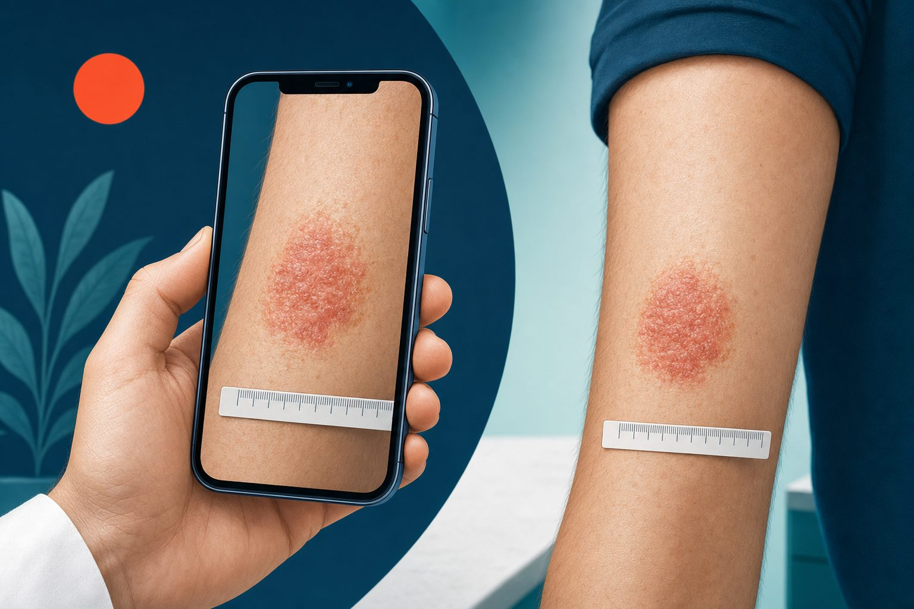
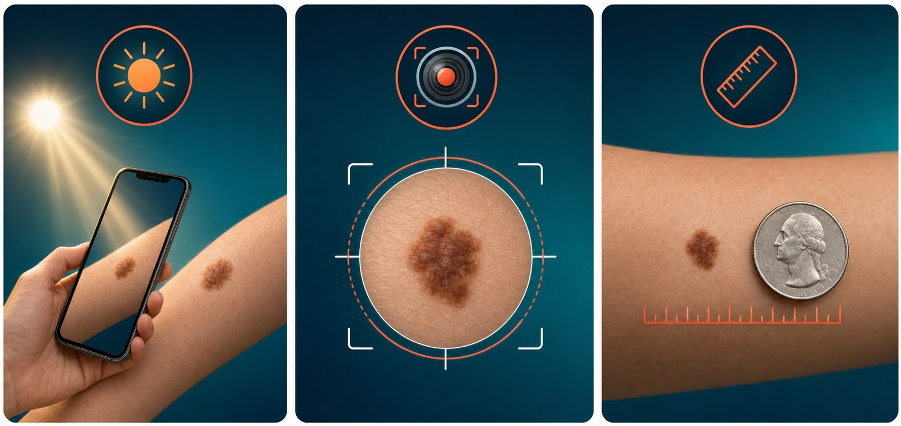

Key Takeaways
- A 2023 systematic review of 44 studies found that teledermatology diagnoses agreed with face-to-face diagnoses 68.9% of the time, and 75.9% of the time in studies where the person taking the images had been trained in image acquisition.[1]
- Acne had the highest diagnostic match of any condition in a 2025 study comparing three photo methods.[2] In a county hospital program, most eczema, rosacea and contact dermatitis consults were managed without an in-person visit.[4]
- Suspected skin cancer, including melanoma, actinic keratosis and suspicious pigmented spots, is not appropriate for photo-only triage; most guidelines call for in-person review of suspected malignant lesions, where dermoscopy and biopsy are available.[4][7]
- Who takes the photos, and how, matters: agreement was higher when the person taking the images was trained and when digital cameras were used. The AAD advises good light, sharp focus, a wide shot plus close-ups, and a coin or ruler for scale.[1][10]
- The American Academy of Dermatology recommends that all teledermatology platforms offer patients the option of in-person dermatology care.[9]

Why This Question Matters
Telehealth and dermatology have an intuitive relationship: skin conditions are visible, and clinicians have always relied on visual examination to diagnose them. That logic has driven rapid growth in photo-based skin evaluation, where a patient submits images that a dermatologist reviews remotely, often called store-and-forward or asynchronous teledermatology.
But a camera and a trained clinician's eye are not the same thing. The question is not whether telehealth can help with skin conditions; it clearly can. The real question is which conditions genuinely lend themselves to photo-based evaluation, and which ones require more than a photograph can convey?
This article works through that distinction using published concordance data, condition-by-condition evidence, and the American Academy of Dermatology's guidance on appropriate use. The goal is a framework that helps patients and clinicians make good decisions about when a photo is enough, and when an in-person evaluation is the right call.
The Evidence: How Well Do Photos Match In-Person Diagnosis?
The best available summary of teledermatology's diagnostic reliability comes from a 2023 systematic review and meta-analysis published in BMJ Open, which pooled 44 studies comparing teledermatology diagnoses with face-to-face assessment; only a few of the included studies used live video.[1] The pooled diagnostic agreement rate was 68.9% (95% CI: 64.4% to 73.1%), with a kappa concordance of 0.67.
Training made a difference. The review excluded studies in which patients took their own photos, so "training" here means training for the person in charge of image acquisition. In studies that provided it, agreement was 75.9% (kappa 0.77), compared with 62.1% (kappa 0.60) without it. Digital cameras outperformed smartphones or tablets (71.7% vs. 59.8%). Agreement in individual studies ranged from 13.9% to 98.0%, reflecting wide differences between studies.[1] A 2023 review noted that improving smartphone camera resolution means more recent research is likely to report higher image quality.[7]
A 2025 randomized cohort study at the American University of Beirut tested three photo acquisition methods in 360 dermatology patients.[2] Unassisted patient-taken photos produced 79% diagnostic concordance. After a brief standardized training session, that figure rose to 84%. Resident-taken clinical photos achieved 87%. Acne had the highest diagnostic match across all three groups.
In an Israeli health plan's store-and-forward program used by 12,815 members, 901 patients had a face-to-face visit within two weeks of their teledermatology consultation. When that visit was for the same problem, the two diagnoses agreed fully or partly in 97.4% of cases (68.1% full, 29.3% partial), and 13 of the 901 patients (1.4%) received a different diagnosis in person.[3] In a 21,725-patient teledermatology cohort using the asynchronous image-text method, about 10% (1,802 patients) had a 3-month follow-up, and 81.2% of those did not require a face-to-face consultation.[8]
The consistent pattern across the evidence: photo-based teledermatology performs well for common inflammatory and morphologically distinct skin conditions, and poorly when the diagnosis depends on lesion characteristics that photographs cannot capture: depth, texture on palpation, bleeding on manipulation, and microscopic dermoscopic patterns.
Conditions Where Photos Are Enough
Several common dermatologic conditions are well-matched to store-and-forward evaluation because their diagnosis depends primarily on visual morphology, distribution pattern, and clinical history, and photographs can convey all three effectively.
Acne vulgaris has the strongest evidence. A study comparing teledermatology with face-to-face diagnosis in 110 patients with suspected acne, using standardized facial photos taken by a resident, reported 100% sensitivity, specificity, and accuracy for the teledermatology diagnosis.[5] In the 2025 Beirut study, acne had the highest diagnostic match across all three photo methods.[2] Facial distribution, lesion type (comedones, papules, pustules, nodules), and severity grading are all assessable from good-quality photographs.
Eczema and atopic dermatitis are also highly suited. In a county hospital teledermatology program, 1 of 30 eczema consults (3%) needed an in-person referral, and none of the 6 atopic dermatitis consults did.[4] The distribution pattern (flexural areas, bilateral symmetry), surface texture (lichenification, weeping, scaling), and response to prior treatment all transmit well in photographs when the images include wide context shots alongside close-ups.
Contact dermatitis is similarly manageable remotely in most cases, particularly when the exposure history is clear. Rosacea, with its characteristic centrofacial erythema and telangiectasia, is photogenically distinct. Psoriasis flares in patients with an established diagnosis are routinely handled by teledermatology, because thick, silvery plaques on elbows, knees, or scalp are difficult to misidentify. Tinea infections (ringworm, athlete's foot, jock itch) show characteristic annular patterns and peripheral scaling that photograph reliably. Seborrheic dermatitis, urticaria with clear triggers, and insect bites also resolve well in the store-and-forward model.

Conditions Where Photos Are NOT Enough
The same evidence base that validates photo-based dermatology for inflammatory conditions is equally clear about its limits. Certain presentations require in-person evaluation, and bypassing that standard creates real clinical risk.
Suspected melanoma and atypical pigmented lesions sit firmly in the not-appropriate category. The meta-analysis by Bourkas et al. found that agreement between teledermatology and histopathology, the reference standard for skin cancer diagnosis, was only 55.7% across all skin biopsies; the authors could not calculate rates by lesion type.[1] A 2023 review of skin cancer teledermatology found that most research suggests adding dermoscopy images (magnified views of the skin surface) is more effective than clinical photos alone, and that most guidelines suggest in-person review for suspected malignant lesions.[7]
Actinic keratoses and lesions suspected of nonmelanoma skin cancer (basal cell carcinoma, squamous cell carcinoma) were always referred for an in-person visit in one county hospital teledermatology program: all 17 actinic keratosis consults and all 28 consults to rule out nonmelanoma skin cancer.[4] Palpation matters here: the sandpaper texture of an actinic keratosis and the pearly raised border of a basal cell carcinoma are characteristics a photograph compresses into a flat image.
Other conditions that do not belong in a photo-only evaluation include: deep skin infections such as cellulitis or a fluctuant abscess, where warmth, induration, and fluctuance require hands-on assessment; vesiculobullous eruptions of uncertain cause, which may require biopsy with direct immunofluorescence for conditions like pemphigus or bullous pemphigoid; scarring alopecias, where dermoscopy of the scalp and often a punch biopsy are necessary for diagnosis; and any widespread rash with systemic symptoms (fever, arthralgias, mucous membrane involvement) where the differential includes drug reactions, vasculitis, or autoimmune conditions requiring urgent workup.
Some skin problems are emergencies, not photo questions. Get emergency care (call 911 or go to an emergency department) for cellulitis with a very high temperature or feeling hot, cold or shivery, a fast heartbeat or fast breathing, purple patches on the skin, dizziness or fainting, confusion, or cold, clammy or pale skin.[11] Do the same for a rash spreading across the body, skin that is blistered or peeling, a swollen or sore mouth, face, lips, tongue, throat or eyes, wheezing, or tightness in the chest or throat, which may be signs of a serious reaction such as Stevens-Johnson syndrome.[12]
In a case series of store-and-forward consultations where the in-person diagnosis was missing from the teledermatologist's differential, contributing factors included poor image quality, inadequate history or diagnostic workup, inability to evaluate textural characteristics, atypical presentations, and skin conditions that changed in appearance over time.[6]
Condition Reference Table
| Condition | Photo Sufficient? | Concordance with In-Person | Recommended Action |
|---|---|---|---|
| Acne vulgaris | Yes | 100% accuracy in one 110-patient study[5]; highest match of any condition in another[2] | Teledermatology or in-person both appropriate |
| Eczema / atopic dermatitis | Yes | ~97% (29 of 30) managed remotely[4] | Teledermatology appropriate; flares can be evaluated by photo |
| Rosacea | Yes | ~75% (6 of 8) managed remotely[4] | Teledermatology appropriate for typical presentations |
| Contact dermatitis | Yes | ~67% (6 of 9) managed remotely[4] | Teledermatology appropriate when exposure history is clear |
| Psoriasis (known diagnosis, flare) | Yes | Papulosquamous conditions, the group that includes psoriasis, were referred in person less often[4] | Teledermatology appropriate for established patients |
| Tinea / ringworm | Yes | Characteristic pattern; good photographic fidelity | Teledermatology appropriate; confirm with antifungal response |
| Seborrheic dermatitis | Yes | ~90% (18 of 20) managed remotely[4] | Teledermatology appropriate |
| Suspected melanoma / atypical pigmented lesion | No | 55.7% vs histopathology across all biopsied lesions, not melanoma-specific[1] | In-person dermatology with dermoscopy; biopsy if indicated |
| Actinic keratosis / NMSC | No | 100% referred in-person (17 of 17 AK; 28 of 28 suspected NMSC)[4] | In-person dermatology required |
| Scarring alopecia | No | Hair and scalp conditions frequently needed an in-person visit[4] | Dermoscopy + biopsy; in-person evaluation essential |
| Cellulitis / deep infection | No | Needs a hands-on exam; painful, hot, swollen skin needs urgent care[11] | In-person or urgent care evaluation |
| Vesiculobullous eruption (unknown cause) | No | Biopsy / immunofluorescence required | In-person dermatology; possible urgent workup |
| Warts (treatment needed) | Partial | ~91% (10 of 11) referred in person, often for procedures[4] | Photo may confirm diagnosis; treatment requires in-person |
Photo Quality That Matters
The meta-analysis found higher agreement when the person taking images had been trained and when digital cameras were used.[1] The AAD's teledermatology standards recommend that patients use a digital camera with a minimum resolution of 800 x 600 pixels, but resolution alone does not determine usability.[9] A 2023 review found that images taken by patients generally have the lowest quality, likely in part because of less experience focusing on lesions.[7] The American Academy of Dermatology's patient guide offers these tips.[10]
Lighting: natural light coming through a window on a sunny day is an excellent source. When bright natural light is not available, use a desk lamp, book light, or flashlight. Aim for an image free of shadows, glare, and harsh lighting.[10]
Focus: when you see crisp detail and no blurring, the picture is in focus. Turn off all camera filters before you start.[10]
Multiple angles: take three photos, each from a different perspective. A wide shot shows where the concern appears on your body, and a close-up should be close enough to show details like fine lines on your skin.[10]
A reference object for scale: place a coin, pencil eraser, or ruler next to the spot or rash, making sure it does not cover any part of it.[10]
Include a comparison shot that shows both your concern and the unaffected skin around it, and use a neutral, one-color background with no people, animals, or objects in view.[10]
What This Means for You
Store-and-forward teledermatology and in-person dermatology serve different, often complementary roles. Neither replaces the other.
The teledermatology pathway works well for common, morphologically distinct conditions in patients who are willing to submit high-quality photographs with a complete symptom history. Acne, eczema flares, rosacea, contact dermatitis, tinea, and psoriasis in established patients are consistently managed this way with strong outcomes. Access is often faster: a 2023 review found that most studies show teledermatology reduces time to advice compared with clinic assessment.[7] The convenience also matters for patients managing chronic conditions who need prescription adjustments or flare management without taking time off work for a clinic appointment.
The in-person dermatology pathway remains essential for any lesion with melanoma concern, any undiagnosed pigmented lesion, suspected skin cancers of any type, conditions requiring palpation or dermoscopy, vesiculobullous eruptions of unclear cause, suspected deep infections, and any presentation where photographs have been submitted but the reviewing clinician has requested additional evaluation. In-person care is also the right starting point for a patient who has never received a diagnosis for a new skin finding, since teledermatology tends to work best when the condition has already been characterized.
The AAD recommends that all teledermatology platforms offer patients the option to access in-person dermatology services when necessary or preferred, and that payers not offer virtual access alone without an option to obtain in-person care.[9] Primary care physicians, urgent care centers, and board-certified dermatologists all remain part of the referral pathway when a skin finding warrants more than a photograph can offer.
Bottom Line
Photo-based teledermatology is well-supported by evidence for common inflammatory skin conditions. In the studies reviewed here, acne, eczema, rosacea, and contact dermatitis showed high diagnostic agreement or were usually managed without an in-person visit, and agreement was higher with trained photographers and good cameras. The technology predictably falls short when applied to conditions that require palpation, dermoscopy, or biopsy. Suspected melanoma, nonmelanoma skin cancers, and undiagnosed pigmented lesions require in-person evaluation regardless of photo quality, and spreading infection with fever or a blistering, peeling rash needs emergency care. Understanding that boundary is what makes photo-based teledermatology a safe and effective part of dermatologic care, rather than a workaround that bypasses necessary evaluation.
How to cite this guide
Bhavsar P. Telehealth for Skin Condition Triage: When Photos Are Enough. TeleDirectMD Health Guides. Last reviewed June 2026. https://teledirectmd.com/health-guides/telehealth-skin-condition-triage-photos/
References
- Bourkas AN, Barone N, Bourkas MEC, Mannarino M, Fraser RDJ, Lorincz A, Wang SC, Ramirez-GarciaLuna JL. "Diagnostic reliability in teledermatology: a systematic review and a meta-analysis." BMJ Open. 2023;13(8):e068207. pmc.ncbi.nlm.nih.gov/articles/PMC10423833/
- Saade S, Khoury DM, Abou Shahla W, et al. "Teledermatology Diagnostic Accuracy: A Randomized Cohort Study Comparing Three Image Acquisition Techniques." International Journal of Telemedicine and Applications. 2025;2025:5789165. doi.org/10.1155/ijta/5789165
- Shapiro J, Lavi IK, Kun D, Ingber A, Freud T, Grunfeld O. "Does the Diagnostic Accuracy and Rates of Face-to-Face Visits Occurring Shortly after an Asynchronized Teledermatology Consultation Justify Its Implementation? An 18-Month Cohort Study." Dermatology. 2024;240(3):425-433. doi.org/10.1159/000537823
- Funkhouser CH, Funkhouser ME, Wolverton JE, Maurer T. "Teledermatology Consults in a County Hospital Setting: Retrospective Analysis." JMIR Dermatology. 2021;4(2):e30530. pmc.ncbi.nlm.nih.gov/articles/PMC10334958/
- Rangkuti ADP, Jusuf NK, Putra IB. "Comparison between the diagnosis of acne vulgaris by teledermatology and face-to-face consultations." Bali Medical Journal. 2021;10(3):1037-1040. doi.org/10.15562/bmj.v10i3.2792
- Lee MS, Stavert R. "Factors Contributing to Diagnostic Discordance Between Store-and-Forward Teledermatology Consultations and In-Person Visits: Case Series." JMIR Dermatology. 2021;4(1):e24820. pmc.ncbi.nlm.nih.gov/articles/PMC10501508/
- Jones LK, Oakley A. "Store-and-Forward Teledermatology for Assessing Skin Cancer in 2023: Literature Review." JMIR Dermatology. 2023;6:e43395. pmc.ncbi.nlm.nih.gov/articles/PMC10335330/
- Lindemann H, Bonetzki T, Frank J. "Diagnostic spectrum and therapeutic efficiency in teledermatology: Results of the largest cohort study to date." Journal of Dermatology. 2023;50(6):800-803. doi.org/10.1111/1346-8138.16769
- American Academy of Dermatology. "AAD Teledermatology Standards." Web page, no version date shown. Accessed November 15, 2026. aad.org/member/practice/telederm/standards
- American Academy of Dermatology. "How to take pictures of your skin for your dermatologist." Last updated July 20, 2023. Accessed November 15, 2026. aad.org/public/fad/digital-health/taking-pictures-skin
- NHS. "Cellulitis." Page last reviewed April 18, 2024. Accessed November 15, 2026. nhs.uk/conditions/cellulitis/
- NHS. "Stevens-Johnson syndrome." Last reviewed March 4, 2026. Accessed November 15, 2026. nhs.uk/conditions/stevens-johnson-syndrome/